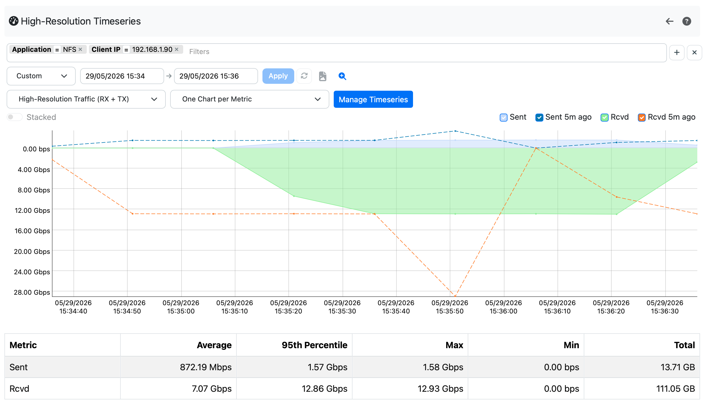
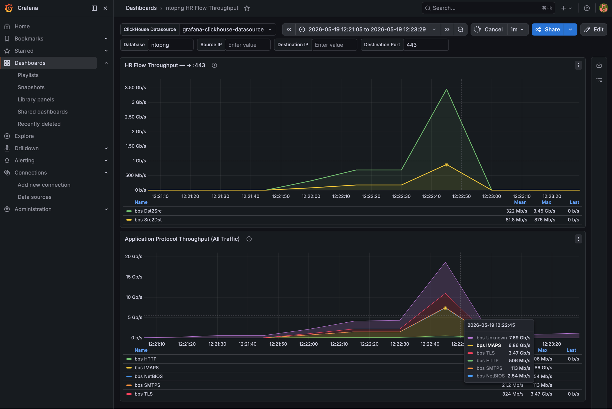

11. Observability
11.1. Overview
Standard flow records summarise all traffic for the lifetime of a connection into a pair of byte and packet counters. This is sufficient for long-term trend analysis, but it hides short-lived spikes and makes it impossible to plot throughput at sub-minute granularity.
ntopng features an Observability dashboard which is able to chart traffic information with High-Resolution (HR) timeseries. HR timeseries are based on metrics (e.g. byte counts) recorded by means of 15-second slots for every active flow. When this is enabled, each completed flow stored in ClickHouse carries an embedded timeline of its own throughput history, enabling charts at 15-second granularity without a separate timeseries database.
Note
High-Resolution timeseries require:
An ntopng Enterprise M (or better) license.
ClickHouse configured as the flow dump backend (
-F clickhouse). See ClickHouse (Flow Dump).nProbe with HR counters support.
11.2. Data Flow
Physical/virtual interface
│
▼
nProbe (live capture)
│ exports @NTOPNG@ template
│ + HR_SRC_TO_DST_BYTES (array of 15s byte buckets)
│ + HR_DST_TO_SRC_BYTES (array of 15s byte buckets)
│ via ZMQ
▼
ntopng (ZMQ collector)
│ auto-detects HR fields
│ writes consolidated flow record
▼
ClickHouse flows table
HR_SRC2DST_BYTES Array(UInt64)
HR_DST2SRC_BYTES Array(UInt64)
│
▼
Grafana dashboard
per-flow bidirectional throughput at 15-second resolution
11.3. nProbe Configuration
To enable HR timeseries, add the two HR information elements to the nProbe export template. No other nProbe option is required:
nprobe -i enp1s0 -n none --zmq "tcp://*:5556" -T "@NTOPNG@ %HR_DST_TO_SRC_BYTES %HR_SRC_TO_DST_BYTES"
11.4. ntopng Configuration
No ntopng configuration change is required. ntopng automatically detects the presence of HR counters in the incoming ZMQ flow records and writes consolidated data to the corresponding ClickHouse columns.
ntopng must be configured to use ClickHouse as the flow dump backend:
ntopng -i "tcp://127.0.0.1:5556" -F clickhouse
See ClickHouse (Flow Dump) for full ClickHouse setup instructions.
11.5. ClickHouse Schema
When HR data is present, ntopng stores it in additional columns of the flows table. Example:
Column |
Type |
Description |
|---|---|---|
|
|
15-second delta byte counters, source-to-destination direction. Element i covers the
interval |
|
|
15-second delta byte counters, destination-to-source direction. |
Those columns are empty arrays ([]) for flows that were not captured by nProbe with HR
counters enabled. Existing deployments without HR support are therefore unaffected.
Sample ClickHouse query to read the per-slot throughput of a specific flow:
SELECT
FLOW_ID,
arrayEnumerate(HR_SRC2DST_BYTES) AS slot,
arrayElement(HR_SRC2DST_BYTES, slot) AS src2dst_bytes,
arrayElement(HR_DST2SRC_BYTES, slot) AS dst2src_bytes
FROM flows
ARRAY JOIN HR_SRC2DST_BYTES
WHERE FLOW_ID = <flow_id>
ORDER BY slot;
11.6. Visualizing HR Timeseries in ntopng
Once HR data is collected and dumped to ClickHouse, ntopng provides charts drawing this data at different aggregation levels, at different pages in the UI: the interface historical chart, the host historical chart, the historical flow details (from the Historical Flows explorer). Furthermore, a dedicated page is available for building any custom chart by selecting the aggregation filter/criteria.
11.6.1. Interface-Level HR Chart
The HR throughput chart is available on the Interface Statistics page (Dashboard → Interface) for any interface that has received at least one flow with HR counters. The chart aggregates all HR slots across every flow seen on that interface, producing a 15-second-resolution view of total interface throughput in both directions. This gives operators an immediate, high-fidelity picture of traffic bursts and micro-spikes that would otherwise be invisible in minute-resolution RRD charts. This is useful for correlating short-lived congestion events with application-layer anomalies. Just look for metric names starting with “High-Resolution” in the dropdown.
11.6.2. Host-Level HR Chart
The same 15-second resolution is available on the Host Details page (Hosts → Host Details → Charts) for any host involved in HR-enabled flows. The chart shows the host’s per-direction throughput at HR granularity, aggregating all flows where the host appears as client or server. Visibility at this level is valuable for identifying which endpoints are responsible for traffic spikes detected at the interface level, and for confirming whether a specific host is the source or target of a sudden bandwidth surge.
11.6.3. Historical Flow HR Chart
When inspecting a specific historical flow through the flow details page (Flows → Historical Flows → Flow Details → HR Charts tab), a dedicated per-flow HR chart is shown. This chart plots the exact bidirectional throughput profile of that single connection at 15-second resolution, annotated with the flow 5-tuple.
This per-flow view is particularly powerful for observability: it makes it possible to answer questions such as “was the traffic bursty or flat?”, “did the throughput drop midway through the connection?”, or “which direction dominated?”, all at a granularity that standard flow records cannot provide.
11.6.4. Observability Page
The Observability page (Dashboard → Observability) brings together filtering and aggregation in a single interactive view.
The page includes a filter bar that lets the user narrow the dataset by any flow field supported by the historical flow search (e.g. source IP, destination IP, source port, destination port, L4 protocol, L7 application protocol, VLAN, ASN, etc.)
A high-resolution chart aggregates the HR counters of all flows matching the active filters. The Group By menu at the start of the filter bar splits the traffic by application, application category, L4 protocol, client ASN or server ASN (Aggregate all shows the total). The time range is selected above the chart.
The menu entry is greyed out, with the reason, when the selected interface has no flows with HR counters or when the license or ClickHouse is missing. When the selected interface is part of a view interface, the page shows the charts of the view.

Because the filter bar exposes the complete set of flow fields, operators can ask highly specific questions directly from the ntopng UI without writing SQL:
“Show me the total throughput of all HTTPS flows from this subnet over the last hour at 15-second resolution.”
“How much traffic did this autonomous system generate in the past 30 minutes, broken down by direction?”
“Did traffic to this server port spike during the maintenance window?”
Applying a filter causes the chart to reload immediately with the matching dataset. Removing a tag reverts to the broader aggregate.
From an observability standpoint, the Observability page fills a gap that neither per-flow details nor minute-resolution interface charts cover. It surfaces the temporal shape of traffic for an arbitrary subset of flows without requiring the operator to identify individual connections in advance, making it directly applicable to incident investigation, capacity planning, and application-behaviour analysis.
11.7. Grafana Dashboard
Sample Grafana dashboards are also available, for those who are used to this UI and want to build a custom dashboard.
https://github.com/ntop/ntopng/tree/dev/httpdocs/misc/grafana
The ntopng High-Resolution Charts sample dashboard (hr-flow-throughput-dashboard.json) is a simple example demonstrating how to use High-Resolution timeseries in Grafana.
The dashboard provides two panels:
Service Flow Throughput — bidirectional throughput for a specific flow, filtered by source IP, destination IP, and destination port. Each data point represents one 15-second slot.
Application Protocol Throughput (All Traffic) — aggregate throughput broken down by application protocol across all flows in the selected time window.

To import the dashboard into Grafana:
In Grafana, go to Dashboards → Import.
Upload
hr-flow-throughput-dashboard.jsonor paste its contents.When prompted, select the ClickHouse datasource that points to the ntopng database.
The dashboard requires the Grafana ClickHouse plugin. See Grafana for general Grafana integration instructions.